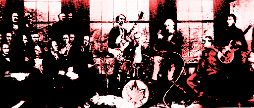

This
Canadian Music Webring site is owned by Ert.
This
Canadian Music Webring site is owned by Ert. Want to join the Canadian Music Webring?
[Skip Prev] [Prev] [Next] [Skip Next] [Random] [Next 5] [List Sites]

Back when the world was young and happy there began a wonderful Canadian Indie/Pop music show called Kids in the Hall on WMBR. Then the Shadows came and KitH, both the TV and radio shows, vanished.
KitH was originally hosted by Ert, who moved to Houston, and Sanjay, who was crushed by a graduate programme.
This
Canadian Music Webring site is owned by Ert.